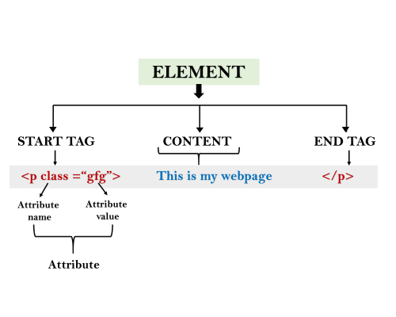

Name : ADARSH KUMAR SAMAL
Roll no : 1906006
Let's Get Started
HTML tutorial or HTML 5 tutorial provides basic and advanced concepts of HTML. Our HTML tutorial is developed for beginners and professionals. In our tutorial, every topic is given step-by-step so that you can learn it in a very easy way. If you are new in learning HTML, then you can learn HTML from basic to a professional level and after learning HTML with CSS and JavaScript you will be able to create your own interactive and dynamic website. But Now We will focus on HTML only in this tutorial.
The major points about HTML are given below:
* HTML stands for HyperText Markup Language.
* HTML is used to create web pages and web applications.
* HTML is widely used language on the web.
* We can create a static website by HTML only.
* Technically, HTML is a Markup language rather than a programming language.
What is HTML
HTML is an acronym which stands for Hyper Text Markup Language which is used for creating web pages and web applications. Let's see what is meant by Hypertext Markup Language, and Web page.
Hyper Text: HyperText simply means "Text within Text." A text has a link within it, is a hypertext. Whenever you click on a link which brings you to a new webpage, you have clicked on a hypertext. HyperText is a way to link two or more web pages (HTML documents) with each other.
Markup language: A markup language is a computer language that is used to apply layout and formatting conventions to a text document. Markup language makes text more interactive and dynamic. It can turn text into images, tables, links, etc.
Web Page: A web page is a document which is commonly written in HTML and translated by a web browser. A web page can be identified by entering an URL.A Web page can be of the static or dynamic type. With the help of HTML only, we can create static web pages.
Hence, HTML is a markup language which is used for creating attractive web pages with the help of styling, and which looks in a nice format on a web browser.An HTML document is made of many HTML tags and each HTML tag contains different content.
Let's see a simple example of HTML.
< html>
< head>
< title>Web page title< /title>
< /head>
< body>
< h1> Write Your First Heading < /h1>
< p> Write Your First Paragraph. < /p>
< /body>
< /html>
Description of HTML Example
< !DOCTYPE>: It defines the document type or it instruct the browser about the version of HTML.
< html > :This tag informs the browser that it is an HTML document. Text between html tag describes the web document. It is a container for all other elements of HTML except < !DOCTYPE>
< head> : It should be the first element inside the < html> element, which contains the metadata(information about the document). It must be closed before the body tag opens.
< title> : As its name suggested, it is used to add title of that HTML page which appears at the top of the browser window. It must be placed inside the head tag and should close immediately.
< body> : Text between body tag describes the body content of the page that is visible to the end user. This tag contains the main content of the HTML document.
< h1> :Text between < h1> tag describes the first level heading of the webpage.
< p> : Text between < p> tag describes the paragraph of the webpage.
Features of HTML
1. It is a very easy and simple language. It can be easily understood and modified.
2. It is very easy to make an effective presentation with HTML because it has a lot of formatting tags.
3. It is a markup language, so it provides a flexible way to design web pages along with the text.
4. It facilitates programmers to add alink on the web pages (by html anchor tag), so it enhances the interest of browsing of the user.
5. It isplatform-independent because it can be displayed on any platform like Windows, Linux, and Macintosh, etc
6. It facilitates the programmer to addGraphics, Videos, and Sound to the web pages which makes it more attractive and interactive.
7. HTML is a case-insensitive language, which means we can use tags either in lower-case or upper-case.
Building Blocks of HTML
An HTML document consist of its basic building blocks which are:
* Tags : An HTML tag surrounds the content and apply meaning to it. It is written between < and > brackets.
* Attributes : An attribute in HTML provides extra information about the element, and it is applied within the start tag. An HTML attribute contains two fields: name & value.
SYNTAX
< tag name attribute_name= " attr_value"> content
Elements: An HTML element is an individual component of an HTML file. In an HTML file, everything written within tags are termed as HTML elements.
HTML Table Tags
HTML table tag is used to display data in tabular form (row * column). There can be many columns in a row.We can create a table to display data in tabular form, using < table> element, with the help of < tr> , < td>, and < th> elements. In Each table, table row is defined by < tr> tag, table header is defined by < th>, and table data is defined by < td> tags.
HTML tables are used to manage the layout of the page e.g. header section, navigation bar, body content, footer section etc. But it is recommended to use div tag over table to manage the layout of the page .
Examples of important table tags are mentioned below along wid their description:
1.< table> : It defines a table.
2.< tr> : It defines a row in a table.
3.< th> :It defines a header cell in a table.
4.< td> :It defines a cell in a table.
5.< caption> :It defines the table caption.
6.< colgroup> :It specifies a group of one or more columns in a table for formatting.
7.< col> :It is used with element to specify column properties for each column.
8.< tbody> :It is used to group the body content in a table.
9.< thead> :It is used to group the header content in a table.
10.< tfooter> :It is used to group the footer content in a table.
HTML List Tags
HTML list tags are used to present list of information in well formed and semantic way. There are mainly three different types of list in HTML and each one has a specific purpose and meaning.
* Unordered list — Used to create a list of related items, in no particular order.
* Ordered list — Used to create a list of related items, in a specific order.
* Description list — Used to create a list of terms and their descriptions.
Examples of important list tags are mentioned below along wid their description:
1.< ul> :Defines an unordered list
2.< ol> :Defines an ordered list
3.< li> :Defines a list item
4.< dl> :Defines a description list
5.< dt> :Defines a term in a description list
6.< dd> :Describes the term in a description list